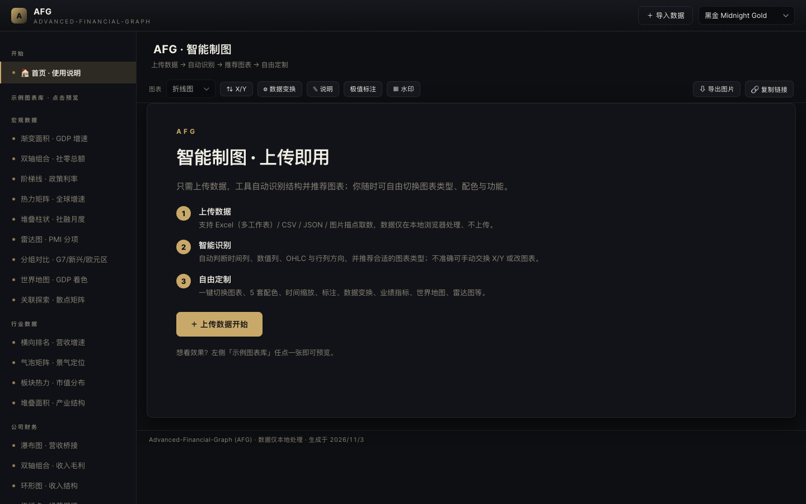
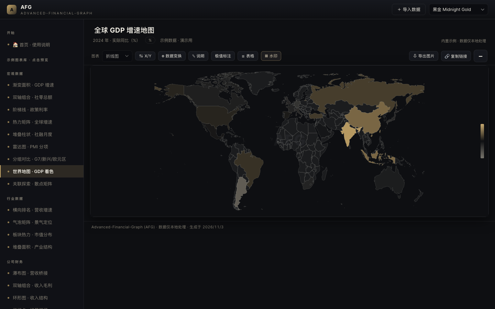
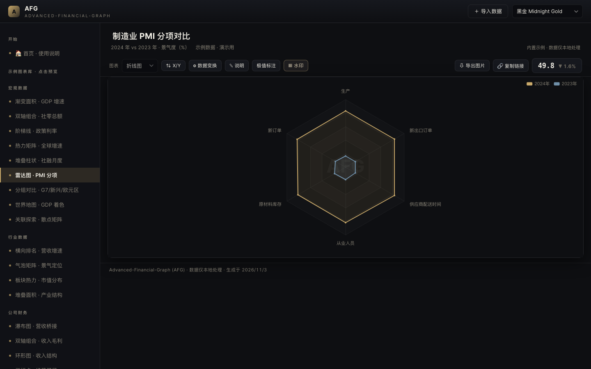
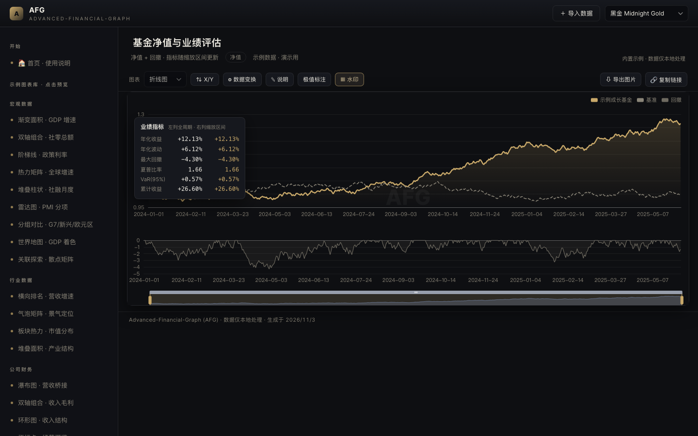
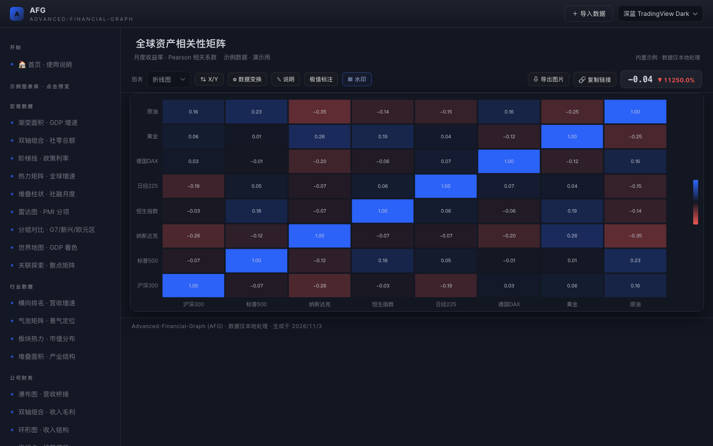

AFG · Advanced-Financial-Graph · 上传数据自动出图
做宏观分析、行业研究、公司财报、股价复盘的时候，Excel 默认图表总觉得"差点意思"——配色艳俗、细节粗糙，放到路演 PPT 里不够高级。请设计师排又贵又慢。
最近我一直在用一款叫 AFG 的免费网页工具，它把金融图表做出了 Bloomberg / TradingView 那种"机构级"的质感，关键是：不用会写代码，上传数据就直接出图。

把 Excel / CSV / JSON 丢进去，它会自动识别时间列、数值列、OHLC、行列方向，并推荐合适的图表类型。多指标的数据，还能一键拆成多张图。
折线、面积、柱状、堆叠、雷达、K线、瀑布、热力矩阵、世界地图着色…… 而且自带 黑金、深蓝、象牙白、墨绿、石墨 五套配色，一键切换。我最爱黑金，路演气场直接拉满。


除了好看，它还很能打：


整工具是纯前端，数据只在你的浏览器里处理，不会上传到任何服务器——做研究数据安全很重要。而且下载后离线也能用。
用 Kimi / Claude / Cursor 写研究时，让大模型输出一段 JSON，粘贴进去就能出图；甚至可以配成 MCP 插件，大模型一句话自动生成图表链接，公众号配图从此不用手画。
1️⃣ 打开网址（电脑浏览器最佳）
2️⃣ 点「＋ 导入数据」上传 Excel，或粘贴 CSV/JSON
3️⃣ 自动识别后，一键切换图表类型 / 配色 / 标注 / 导出
AFG · Advanced-Financial-Graph —— 让金融图表回归"机构级"质感。免费开源，欢迎体验与反馈。